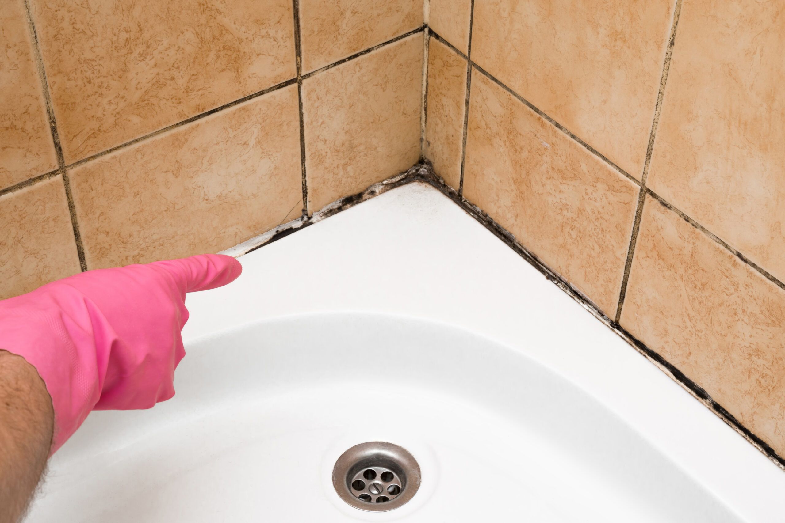

We provide professional mold inspections and remediation services that guide property owners through the right steps after mold is discovered, helping stop its spread, protect health, and restore the space safely and completely.
Finding mold in your home or business can be overwhelming. Whether it’s a small visible patch or a widespread issue uncovered during an inspection, what you do next matters. Acting quickly and correctly can prevent further contamination, limit damage, and reduce long-term costs. Knowing what to do after mold is found helps you regain control and avoid mistakes that often make the situation worse.
The first and most important step after discovering mold is to leave it undisturbed. Mold spreads through microscopic spores that easily become airborne when touched, scrubbed, or vacuumed. Attempting to clean it right away can cause spores to travel into other rooms, HVAC systems, and hidden spaces.
Avoid peeling paint, tearing out drywall, or wiping the area with household cleaners. Even walking repeatedly through the affected space can track spores to clean areas. Limiting access helps contain the problem until proper steps are taken.
Mold cannot grow without moisture. After mold is found, identifying the water source is critical. Common causes include plumbing leaks, roof damage, appliance failures, condensation, or high indoor humidity.
If a visible leak is present, shut off the water supply if possible. For humidity-related issues, increasing ventilation may help slow growth temporarily. However, stopping moisture does not remove existing mold. It simply prevents further spread while professional remediation is arranged.
Properties with recent flooding or unresolved water damage often require both water damage restoration and mold remediation to fully correct the issue.
Store-bought mold test kits and online DIY solutions often provide incomplete or misleading information. Testing without professional interpretation does not identify the full extent of contamination or locate hidden mold behind walls or under flooring.
DIY cleanup can also complicate insurance claims, damage materials, and increase health risks. Mold remediation requires containment, air filtration, proper removal techniques, and protective equipment. Skipping these steps often leads to recurring mold and higher costs later.
A professional inspection determines how far the mold has spread, what materials are affected, and what steps are required to remove it safely. Certified technicians use moisture meters, thermal imaging, and visual assessments to detect hidden mold that cannot be seen.
An inspection also helps determine whether materials can be cleaned or must be removed. This information is critical for creating an effective remediation plan and preventing unnecessary demolition.
Professional documentation is especially important if insurance coverage may apply.
If mold is found in occupied spaces, consider relocating occupants from heavily affected areas until remediation is complete. This is especially important for children, older adults, and individuals with respiratory conditions or weakened immune systems.
Personal belongings near the affected area may also need evaluation. Mold spores can settle on furniture, clothing, documents, and electronics. Professional pack out and cleaning services are often used to protect and restore contents while remediation work is completed.
Mold remediation is more than surface cleaning. It typically includes containment to prevent cross-contamination, air filtration using HEPA systems, removal of contaminated materials, and thorough cleaning of remaining surfaces.
Containment barriers and negative air pressure are used to keep spores from spreading. Materials that cannot be safely cleaned, such as heavily contaminated drywall or insulation, are removed and disposed of properly. Remaining areas are cleaned with professional-grade antimicrobial solutions.
Once mold is removed, drying and moisture control are addressed to prevent future growth.
One common mistake after mold is found is attempting to paint over it. Paint does not stop mold growth and often traps moisture inside materials. This allows mold to continue spreading beneath the surface, creating a larger problem that remains hidden.
Any repairs or cosmetic work should only be done after mold remediation is completed and moisture issues are resolved.
After remediation, steps should be taken to improve airflow and manage humidity. Bathrooms, kitchens, basements, and laundry rooms often require better ventilation to reduce moisture buildup.
Using exhaust fans, repairing HVAC issues, and monitoring indoor humidity levels can help reduce the chances of mold returning. Professional recommendations based on your specific property can provide long-term protection.
If mold damage is related to a covered event, documentation matters. Inspection reports, photos, moisture readings, and remediation records help support insurance claims and future property disclosures.
Professional remediation companies provide clear documentation that protects property owners and helps demonstrate that the issue was handled correctly.
Waiting after mold is found allows contamination to spread and damage to worsen. Mold can compromise drywall, wood framing, insulation, and flooring over time. It also continues affecting indoor air quality as long as it remains present.
Early action keeps remediation smaller, faster, and less costly.
When you need clear guidance and professional help after mold is found, S.W.A.T. Restoration is ready to respond. Our team provides certified mold remediation, thorough inspections, and full restoration services designed to stop mold at the source and protect your property long-term. We handle containment, removal, moisture control, and repairs with care and precision.
If you’ve discovered mold in your home or business, taking the right steps now can prevent bigger problems later. Contact S.W.A.T. Restoration today to schedule an inspection and move forward with confidence.